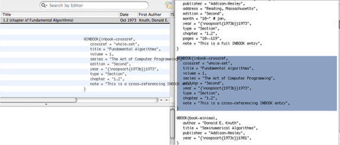

Drag and Drop Drag and Drop
Drag and Drop Drag and DropReferences can also be added to a bibliography by dragging entries from a text source (text editor, web browser) into BibDesk's main publicationslist. The text can be BibTeX, RIS (Reference Manager), MARC, JSTOR or ISI Web Of Science formatted text. Here's a fancy picture:

You can also drag a file containing formatted text in any of these formats and drop them into BibDesk's main publications list.
You can easily add a new bibliography item that links to a file, such as a PDF file. Just drag the file from a Finder window (or anywhere else) and drop it into BibDesk's main publications list. Similarly, you can add a new bibliography item linking to a remote URL by dropping a `webloc' file on the main publications list.
References can be dragged from the main publications list (or another source) and dropped on an editor window, as well, which will only set non-empty fields of the publication; this can be quite useful when you are entering a number of items from a common source. If you do want to overwrite all fields when dragging to an editor, simply hold down the option key while you drag.
Moreover, references can be dragged from one publication list and dropped on another, to easily copy items between documents.